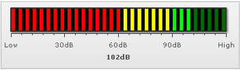

LED Gauge > Configurations
The LED gauge chart from FusionWidgets suite offers you a lot of configuration options. Here, we'll see how to:
The LED gauge offer 5 pre-defined color palettes for you to choose from. Each of these palettes are accessible by the number 1-5. To choose a palette, all you need to do is set:
<chart palette='2' or '3' or ..>
Shown below are a few examples of palettes applied on our previous chart:
Additionally, you can also define an entire new palette by setting a single theme color using:
<chart paletteThemeColor='669933' ..>
This will create a new palette derived from this color and then color the chart as under:
When you divide the LED scale into color range, the LED bars in each zone take up the fill color of that color range. However, if you want the entire LED bars to be filled with a single color (color of the range in whose zone the current value is falling), you can set:
<chart ... useSameFillColor='1' ...>
This results in:
You can also make the non-activated (background) LEDs of the same color using:
<chart ... useSameFillBgColor='1' ...>
You can hide the gauge border using:
<chart showGaugeBorder='0' ...>
Or, you can customize gauge border properties using:
<chart ... gaugeBorderColor='FFFFFF' gaugeBorderThickness='2' gaugeBorderAlpha='100' ...>
This will result in:
To configure the background color for gauge, you can set:
<chart ... gaugeFillColor='CCCCCC' ...>
You can configure LED size & gap in pixels using:
<chart ... ledSize='5' ledGap='5' ..>
This results in:

To make the LEDs continuous, you can set ledGap as 0, as under:
<chart ... ledSize='1' ledGap='0' ...>
This results in:
You can opt to hide chart value using:
<chart showValue='0' ...>
This will result in:
You can opt to hide all tick marks & values using:
<chart ... showTickMarks='0' showTickValues='0' ...>
This will result in:
You can place the ticks above gauge (or on left/right in vertical LED) using:
<chart ... ticksBelowGauge='0' ..> or <chart ... ticksOnRight='0' ...>
This will result in:
You can configure the number of tick marks as under:
<chart ... majorTMNumber='8' minorTMNumber='3' ...>
It will result in:

The chart can automatically adjust the number of major ticks to a best feasible value. However, if you do not want the chart to do the same, you can add:
<chart ... adjustTM='0' majorTMNumber='8' minorTMNumber='3' ...>
You can opt to show every nth tick value by setting:
<chart ... tickValueStep='2' ...>
This will result in every 2nd major tick mark's value being shown, as under:
You can configure tick mark cosmetics using:
<chart ... majorTMColor='333333' majorTMAlpha='100' majorTMHeight='10' majorTMThickness='2' minorTMColor='666666' minorTMAlpha='100' minorTMHeight='7' minorTMThickness='1' ...>
This will result in: